Sam & Dora Diamondstein — their story in real photographs
This is Sam and Dora Diamondstein themselves, photographed together in the 1950s — decades after the story below begins. 141 letters survive from this family, written mostly between 1901 and 1926, with a handful of later documents reaching into the 1940s. What follows is their story told in order, from before either of them was born to the present day, paired wherever an honest photograph exists: of the actual place or event, or — where nothing more specific survives — a clearly-labeled representative stand-in from the same era and place.
Sam and Dora Diamondstein, 1950s — from the family's own archive, not an external source.

c.1785
The earliest ancestor this family can trace
As far back as the family's own paper trail goes, it starts with Rabbi Tsvi-Hirsh HaLevy, born around 1785 in Keidan (today Kėdainiai, Lithuania) — head of an advanced Talmudic academy there, five generations before Sam Diamondstein, the man at the center of this story, was even born.
The Old Synagogue in Kėdainiai, built 1784 — the same years Tsvi-Hirsh HaLevy was alive there. Photographed 2011; the building survives, no photo from his own lifetime does. Wikimedia Commons.
CC BY-SA 3.0 source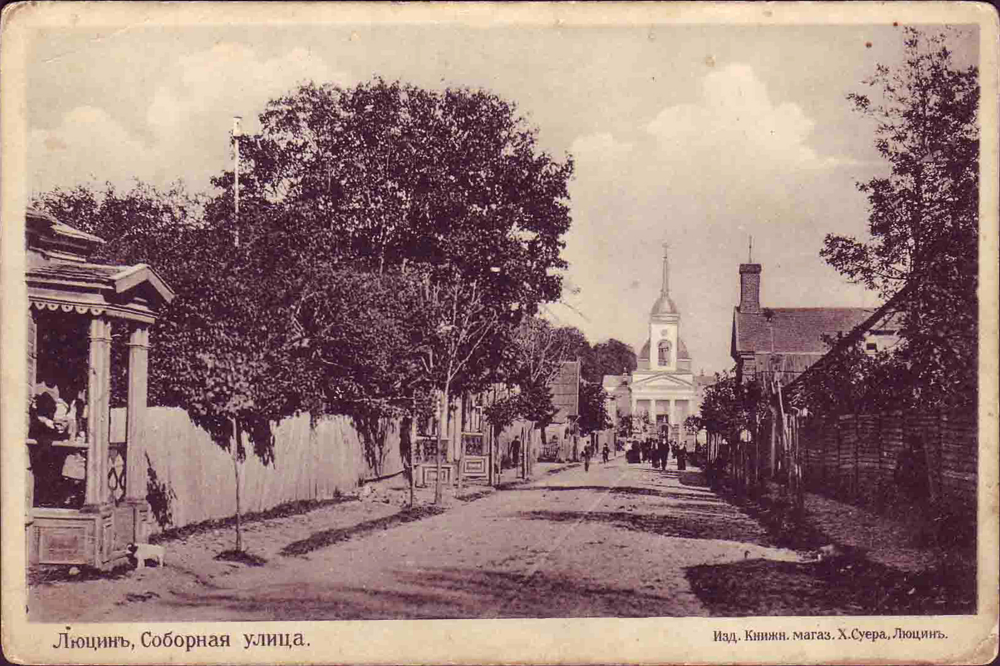
1845
The family settles in Korsovka
One of Tsvi-Hirsh's sons, Shlomo (also called Zalmen), relocated from Keidan and died in 1845 in the small shtetl of Korsovka — today Kārsava, Latvia. It's the move this whole family's later story depends on: Korsovka is where Sam himself would be born, decades later.
No verified historical photo of Korsovka/Kārsava itself survives online; this is a pre-1917 postcard of Ludza (Lucyn), a Latgale town roughly 30km away, same region and era. Wikimedia Commons.
Public domain source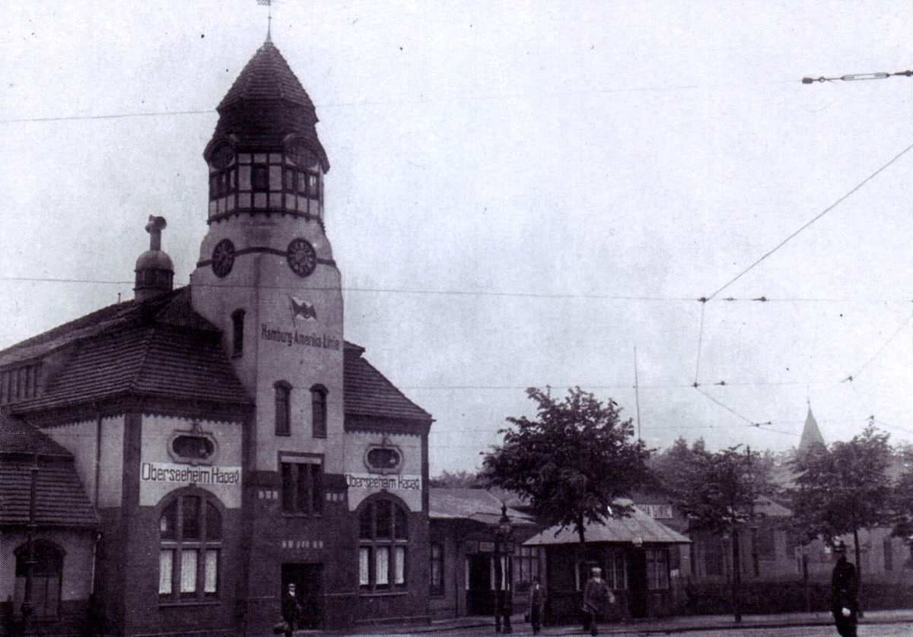
c.1880s–1900s
Grandparents to both Sam and Dora, ten children scatter
David and Keila-Tsirel — grandparents to both Sam and Dora, though neither had been born yet — had ten children who scattered out of Russia's Pale of Settlement in every direction available to a Jewish family of the era: Montreal, London, South Africa, Palestine. Two of the ten shaped everything that follows: Getzel, who stayed in Korsovka, and Reuven, who reached London. Getzel would become Sam's father; Reuven would become Dora's — making Sam and Dora first cousins before either was born.
The emigrant reception hall at Hamburg's Veddel docks, c.1900 — the kind of facility this generation's move through Europe actually ran through. Wikimedia Commons.
Public domain source
c.1880
Sam is born, in Korsovka
Sam Diamondstein — the man whose letters anchor this entire archive — was born around 1880 in Korsovka, a small Jewish shtetl in what's now Latvia, the son of Getzel.
Market square in Gargždai, Lithuania, by Paulina Mongirdaitė, circa 1910–1912 — representative of the kind of town Sam grew up in, not Korsovka itself. Wikimedia Commons.
Public domain (US) source
1889
Dora is born
Dora — the cousin Sam would eventually marry — was born in 1889. Her father Reuven was one of the ten children who eventually reached London, but exactly when relative to Dora's own birth isn't established by the record — the corpus fixes her birth year, not her birthplace. Her brother, Yehuda-Leib, was raised in Torah study by their father from early childhood, and a memorial biography survives describing him later "standing before" a rabbinic authority, Rabbi Avigdor — real detail, though the biography itself never names a specific yeshiva.
Dora herself, as a young woman — undated, but a real photo from the family's own archive, the same one used as the reference for the site's AI-generated Dora portrait.
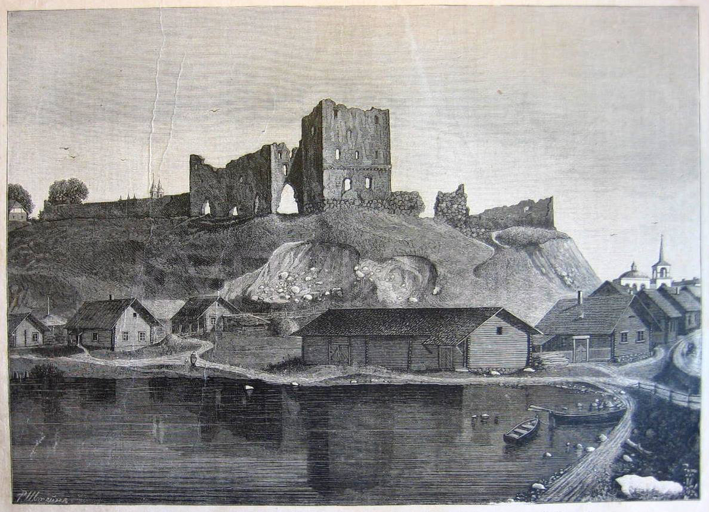
c.1890
Sam's father, Getzel, dies young
Within a year or two of Dora's birth, Sam's father Getzel died young, still in Korsovka — leaving no photograph, and no letter, behind.
Not a photograph — a period engraving of Ludza (Lucyn), a nearby Latgale town, dated to 1888, roughly the same years as Getzel's death. No photograph of Korsovka itself from this era has been found; nothing depicts Getzel or his death directly.
Public domain source
1901
Sam leaves alone for Montreal
At around 18 to 21, Sam left Korsovka alone, crossing overland to a Channel port and then steerage across the Atlantic to Montreal. Turned away on arrival for being a foreign Jew, he told the hiring office he was an Austrian Christian instead — and they believed him.
Steerage passengers on SS Friedrich der Grosse, George Grantham Bain Collection, Library of Congress, c.1907–1914 — a few years later than Sam's actual 1901 crossing. Wikimedia Commons.
Public domain (US) source
1901–08
Hard years in Montreal
Montreal didn't go well. Sam cycled through jobs that didn't last, at one point earning around a dollar for four days' work, and weighed leaving for Winnipeg, Minnesota, Chicago, or a Canadian land-settlement scheme — before Montreal failed him for good.
Rue de la Gauchetière near Saint-Dominique, in Montreal's Jewish immigrant quarter, 1909. Photo by Philippe Du Berger, BAnQ / E.Z. Massicotte collection. Wikimedia Commons.
CC BY 2.0 source
1907
The Panic of 1907 wipes him out
In 1907, the financial panic that swept Wall Street reached Montreal too, wiping out whatever Sam had managed to build — the second time Montreal had failed him.
Wall Street during the actual Panic of 1907. Wikimedia Commons.
CC BY-SA 3.0 source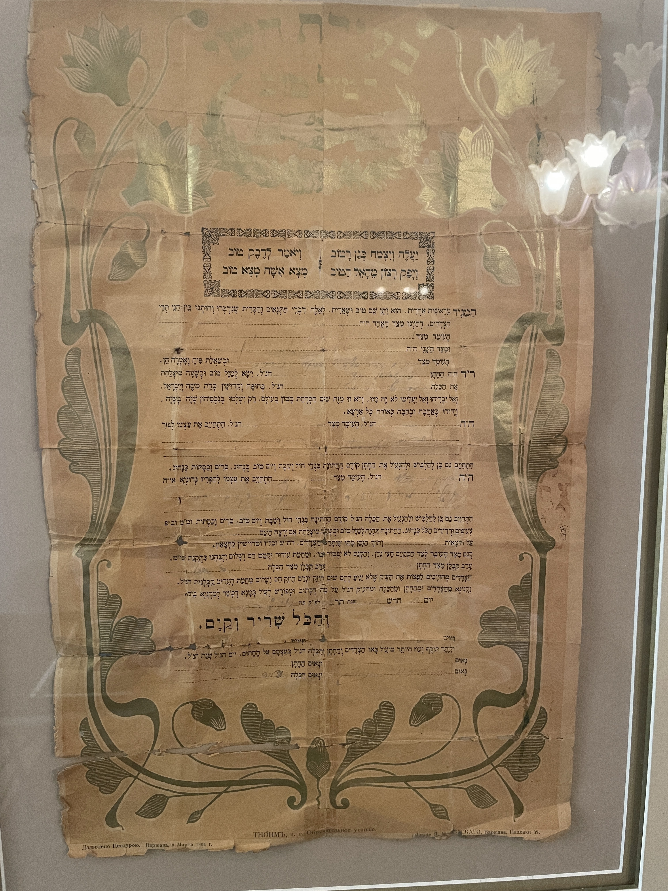
Jan 1908
A marriage contract is signed, a world away
While Sam was still in Montreal, Dora's father Reuven — who was also Sam's own uncle — signed a tenaim, the traditional Jewish pre-wedding contract, obligating a £50 dowry "before the wedding," with a rabbi, cantor, shamash, and klezmer band already budgeted for in the same document. This is that actual document. It would be three more years before the wedding it promised actually happened.
Sam and Dora's own 1908 tenaim, signed 17 Shevat 5668 (~January 1908) in London — the printed boilerplate has been independently read and corroborates the supplied English translation closely, but the handwritten names and exact date rest on that translation's authority, not on independently-read handwriting.
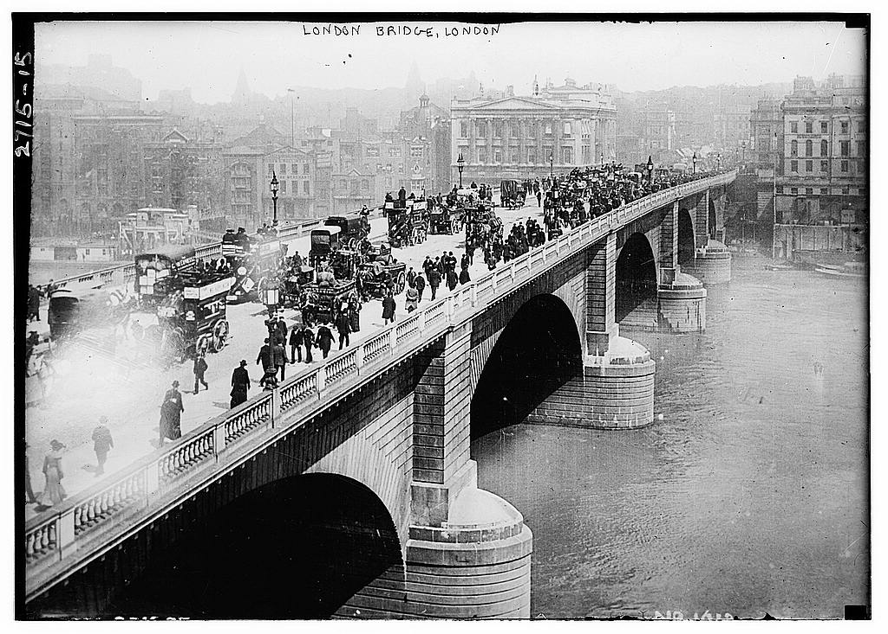
1908
Sam gives up on Montreal for London, for good
Later that year, Sam gave up on Canada for good and crossed the Atlantic again — this time to London, where Dora's family lived. Dora sent three pounds toward his return ticket.
London Bridge, circa 1910 — a couple of years after Sam actually made the move. Library of Congress via Wikimedia Commons.
Public domain (US) source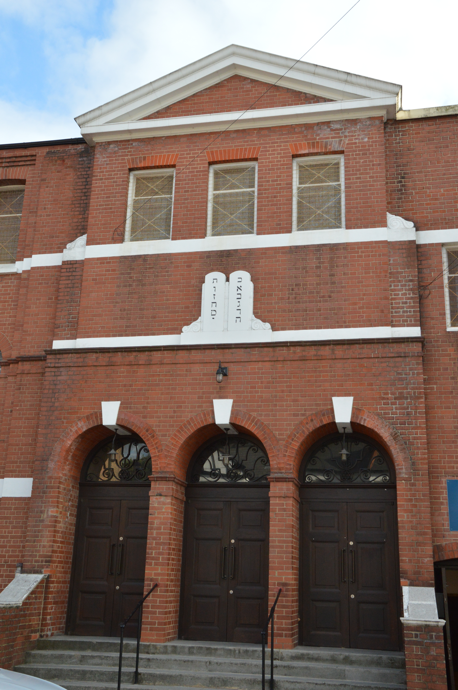
Feb 1911
Sam marries his cousin, Dora
Sometime around February 1911, Sam and Dora married in London — cousins who had courted almost entirely by letter, across an ocean, for a decade. No photograph of their actual wedding day survives.
The Hackney and East London Synagogue (built 1897, as South Hackney Synagogue) — a real synagogue in the actual borough Sam and Dora lived in, standing well before their 1911 wedding, though not confirmed as their own wedding venue. Wikimedia Commons.
CC BY-SA 4.0 sourceThe three daughters, together at Gladys's wedding
Sam and Dora's three daughters — Gladys, Beatrice, and Cynthia — were born between 1913 and 1923. This photo, from the family's own archive, shows them together years later at Gladys's wedding: Cynthia (front), Beatrice (center), and Gladys (right). The exact date isn't confirmed, though the dress style suggests the 1930s.
Cynthia (front), Beatrice (center), and Gladys (right) at Gladys's wedding — family archive. Exact date not confirmed; the dress style suggests the 1930s.

1916
Sam starts his own fur business
By September 1916, Sam had his own business — S. Diamondstein & Co., Fur Dealers and Job Buyers — trading out of Fashion and Fournier Streets in Brick Lane, with the family now living at 34 Alvington Crescent, Dalston.
Petticoat Lane, around the corner from Sam's real Fashion Street shop address — this specific photo (a photogravure from "Wonderful London") is dated over a decade later, 1927. Wikimedia Commons.
CC0 (public domain dedication) source
Sept 1916
Sam watches a Zeppelin fall from the sky
That same year, Sam and his friend John watched a German Zeppelin shot down over Cuffley, north London — the first ever destroyed over Britain. "It was a fine sight," Sam wrote home, in the very same letter he went back to asking after the children at the seaside.
German naval Zeppelin L31 airborne over the battleship SMS Ostfriesland, 1915 — a real photo of a Zeppelin actually in flight, not the specific airship Sam saw (SL11, shot down at night; no photograph of that moment exists, only artist illustrations survive of it). A different airship, a year earlier, over German waters, not London. Imperial War Museums, via Wikimedia Commons.
Public domain source
1919–26
Summers at the English coast
Every summer for most of a decade, Dora and the girls went to the English coast for weeks at a stretch — Margate, Ramsgate, Westcliff-on-Sea, Bournemouth — while Sam stayed in London for work, writing home with a cheque and the same handful of questions, week after week.
Marine Drive, Westcliff-on-Sea, 1930 — one of the family's own named coastal towns, though this photo is a few years later than their actual 1919–26 summers there. Image served at reduced (500×307) resolution — Wikimedia rate-limited larger renditions during this research pass. Wikimedia Commons.
Public domain source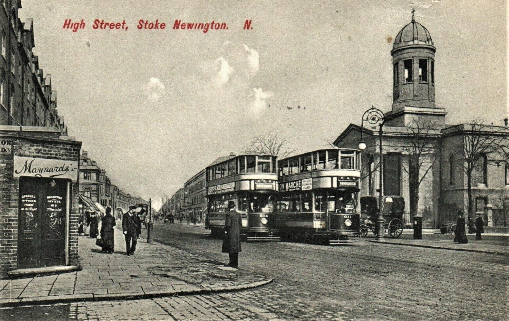
1916–30s
Home and business climb London's ladder
Over these same two decades, the family's address moved steadily up London's social ladder — Alvington Crescent, then Amhurst Road, Australian Avenue, and eventually Heathland Road, all in Hackney and Stoke Newington.
High Street, Stoke Newington, 1918 — the actual neighbourhood named in the family's own address history, though not the specific streets themselves, which left no verified period photo of their own. Postcard by Charles Martin, via Wikimedia Commons.
Public domain source
1920s
Fur-buying trips to Paris, Berlin, Leipzig
The fur business made Sam genuinely wealthy. By the 1920s he was buying pelts by the thousand on regular trips to Paris, Berlin, and especially Leipzig — ninety stone martens and three thousand dyed moles in a single afternoon, at a steep markup over what he'd sell them for back home.
Leipzig's Brühl district, the real center of Europe's fur trade, c.1923 — period fur-trade shop signage visible in the original. Wikimedia Commons.
Public domain source
1922–late 1930s
Letters from Germany, silent on politics
Sixteen of Sam's letters home through the 1920s and 30s were written from Leipzig, Berlin, and Hanover — the exact years of the Weimar Republic's collapse and the Nazi Party's rise. Every one talks about hotels, prices, and missing home. Not one mentions politics.
Reichsbank staff moving bags of cash under police escort during Germany's 1923 currency collapse — the crisis those letters were written against, not depicted in them. Bundesarchiv, via Wikimedia Commons.
CC BY-SA 3.0 DE source1929
Dora's brother dies in Jerusalem
Dora's brother Yehuda-Leib — learned enough, per family record, that his own son later wrote a full biography of him — had emigrated to Jerusalem, where he died in 1929, wounded during the Arab attacks on the Diskin Orphanage that were part of that year's Palestine riots.
Jewish families fleeing Jerusalem's Old City with bag and baggage at Jaffa Gate, during the same 1929 riots. American Colony/Matson Collection, Library of Congress, via Wikimedia Commons.
Public domain source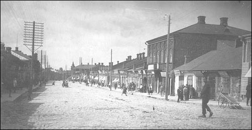
1941
The Holocaust reaches Korsovka
In 1941, the German occupation of Latvia brought mass killing to Jewish communities across the region. Three children of one of Sam's first cousins, still living in Korsovka, were murdered that year; two other cousins born in the same town escaped and eventually reached what would become Israel — the same family split, in a single generation, between those who got out in time and those who didn't.
A quiet street in Rēzekne, the main town of the Latgale region, 1929 — 12 years before this beat and not Korsovka itself, but the same region. No photo of the event itself is shown, deliberately: this project's honesty rules rule out atrocity or camp imagery standing in for a specific family's loss.
Public domain source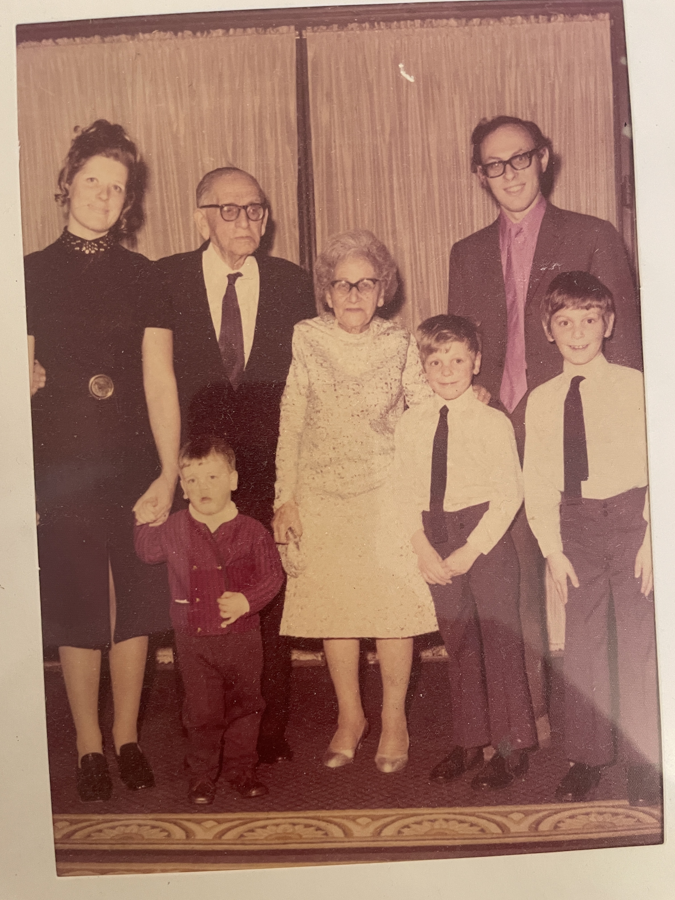
1971
Diamond wedding anniversary
Sixty years after their 1911 wedding, Sam and Dora celebrated their diamond wedding anniversary in 1971, surrounded by family: Frank and Barbara Levine, and their three sons — Richard, Paul, and Geoffrey. Paul, one of the three boys in this photo, is this project's own author, decades before he'd rediscover Sam and Dora's letters and build this project from them.
Sam and Dora with Frank and Barbara Levine and their sons Richard, Paul, and Geoffrey, 1971 — dated by family testimony and corroborated visually (the children's ages match their known 1963, 1965, and 1968 birth years). From the family's own archive.
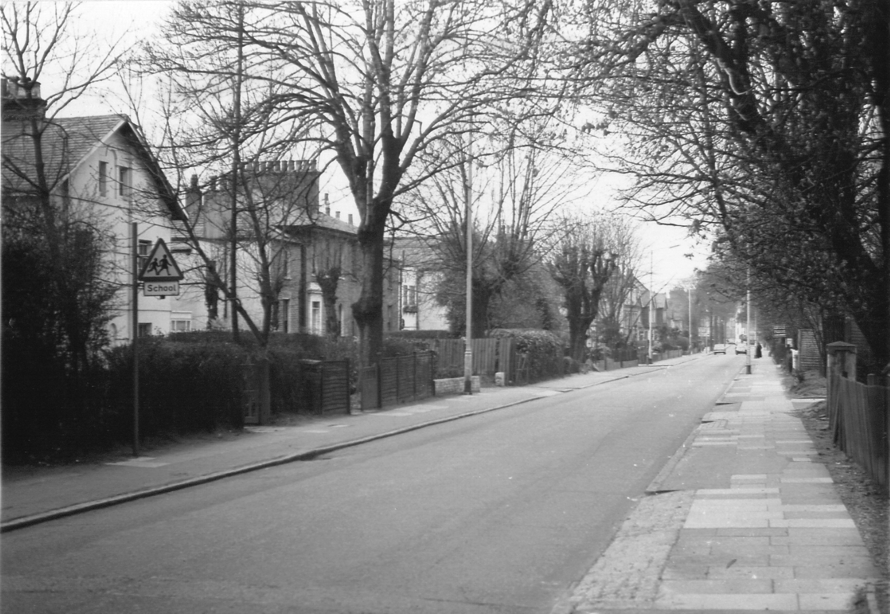
Early 1970s
Sam and Dora move to Edgware
In their later years, Sam and Dora left Stamford Hill — the family's home turf for decades — for Edgware, further out in north-west London.
Fortis Green, north London, 1973 — a real photo from the same years as the move, showing the same kind of quiet outer-London suburban street, though not Edgware itself (no freely-licensed 1970s Edgware photo could be found after checking Wikimedia Commons, Geograph, London Transport Museum, and the Britain from Above aerial archive).
Public domain source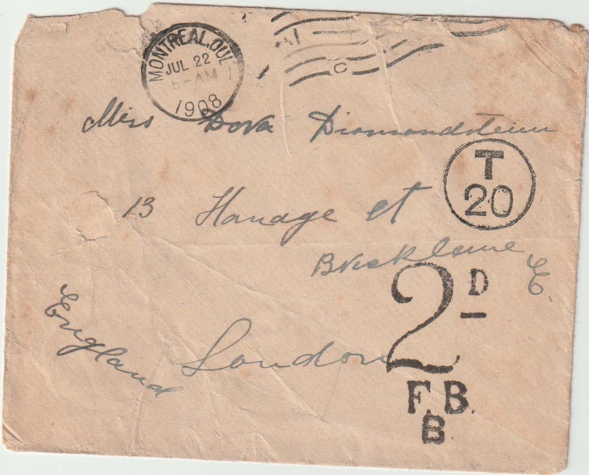
Today
The letters survive
The correspondence was never lost so much as quietly handed forward: a folder kept by Gladys's son Robin in the 1960s, passed to Richard — Paul's own brother, researching the family tree — in the 1990s, and inherited by Paul after Richard's death in 1999. Paul, Sam and Dora's own great-grandson, is the one who found them, and who built this project from what survived: 141 letters, and everything it took to make sense of them.
A real envelope from the archive itself, 1908 — one of the actual objects this whole story is built from, not a stand-in.